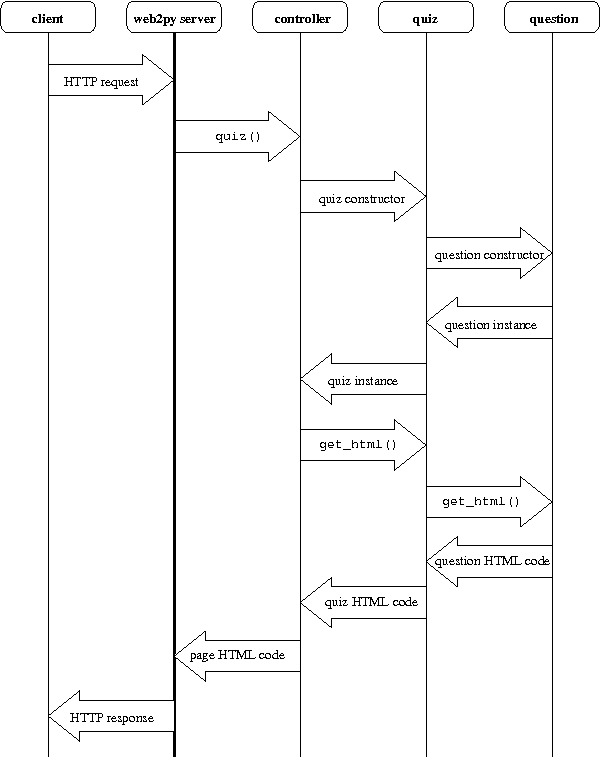

Start quiz message exchange diagram

- HTTP request
-
http://cdoku.seng.uvic.ca:8080/cqg/quiz?spec=min_io_alone
Because the URL does not reference the
static/ directory, a dynamic HTML page is requested.
The URL parameter, spec=min_io_alone, is available in the
vars property of the Python global variable
request.
Specifically, request.vars['spec'] has value
'min_io_alone'.
index()-
invoke function
index() in
controllers/quiz.py
- quiz constructor
-
invoke the constructor of class
quiz in
quiz.py
- question constructor
-
invoke the constructor of class
question in
question/XXX.py, where XXX is the question type.
- question HTML code
-
question presentation in HTML is returned by function
get_html() in the question object.
- page HTML code
-
HTML code of the page is return by function
get_html() in the
quiz object.
- HTTP response
-
web2py server sends the generated HTML as an HTTP response to the client